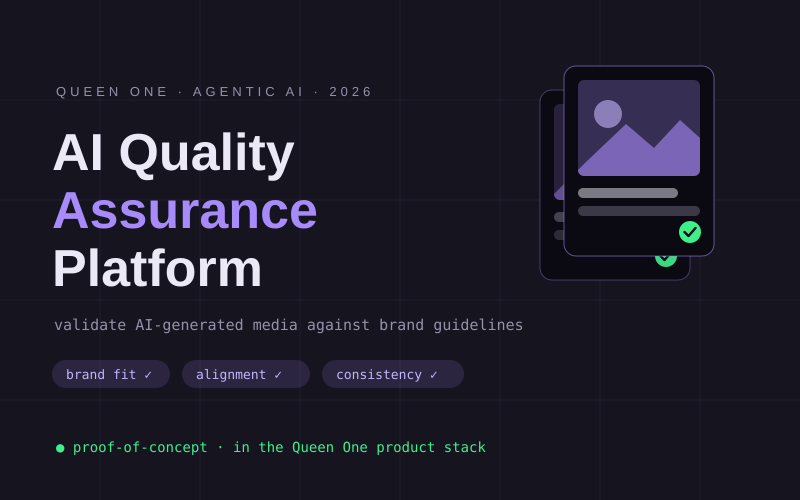

Council review
Before a line of code, the concept was stress-tested by a five-agent LLM council — contrarian, first-principles, expansionist, outsider, executor — that debated whether this redesign should exist at all.
~/bret-kiefer/projects (main)
Systems I've built and led. Click into a project for the full story.

Proof-of-concept platform that validates AI-generated images against brand guidelines inside Queen One's product stack — brand efficacy, alignment, and generation consistency.
06.2026 — present
Eagle Scout service project at St. Marguerite's Retreat House — volunteer team leadership through greenhouse framing, compost construction, and grounds restoration.
2022Anyone can put "agentic" in a headline. Here's what it actually looks like — this website was planned, designed, and shipped by directing AI agents, with me as the human in the loop.
Before a line of code, the concept was stress-tested by a five-agent LLM council — contrarian, first-principles, expansionist, outsider, executor — that debated whether this redesign should exist at all.
The design system, markup, animations, and image pipeline were produced with Claude Code. I set direction, made the calls, and reviewed every change — the agent did the typing.
Everything lives in the open on GitHub — baseline committed first, redesign layered on top, full history intact. Next: a real domain and a database-backed contact flow.
view the repo →